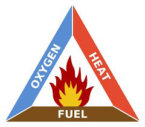

Activity 1
- 1.Use library or reliable online sources to identify the necessary conditions for combustion.
- 2.Describe any daily combustion events you have witnessed relating to what you have searched in (a).
Necessary conditions for combustion
For combustion to occur, three components are needed: heat, oxygen gas and fuel.
Heat
Heat increases the temperature of the fuel. For combustion to begin, sufficient heat must ignite the fuel. A spark, a flame or another heat source can cause this heat.
Oxygen
Oxygen is the gas required for combustion. It is available in the air. Without oxygen, combustion cannot take place.
Fuel

Fuel can be solid, liquid or gaseous. Examples of fuel include wood, charcoal, gas, oil or other materials that can catch fire and burn. The relationship between oxygen gas, heat and fuel forms the fire triangle, as shown in Figure 1. If any of these components is missing, combustion cannot occur.